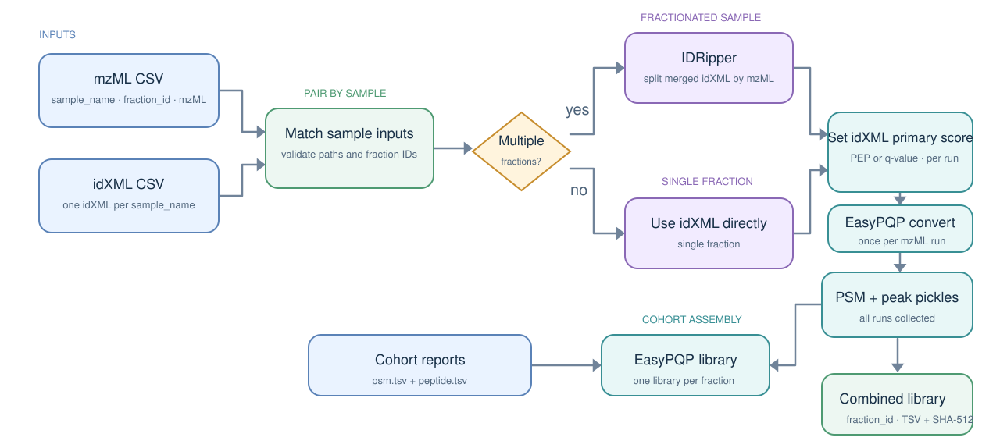

Spectral library generation
EasyPQP combines validated identification evidence and measured spectra into the library used by DIA-NN for quantitation. Protein labels come from the upstream grouping method.

Open the original flowchart at full size.

How it works
- Match each sample’s validated idXML to its mzML acquisitions. For samples with multiple fractions, OpenMS IDRipper separates the identification records by source acquisition.
- Prepare an EasyPQP-compatible idXML using Percolator posterior error probabilities, then extract the corresponding PSM and fragment-peak information.
- Build the library using the accepted PSM and peptide reports from validation. These reports determine the accepted evidence and protein labels.
- For fractionated experiments, build a library for each
fraction_idacross samples, label its rows by fraction, and combine the fraction libraries into one TSV for quantitation.
Inputs and outputs
All inputs are supplied automatically: mzML acquisitions, validated idXML files, and the cohort PSM and peptide reports. The main output is the EasyPQP TSV used by the next step, with a SHA-512 checksum. Optional intermediate files can help investigate a failed library build.
Use the same fraction_id for corresponding fractions across samples. mzML basenames must be unique across the experiment and must not contain extra dots; see Preparing inputs.
The score is selected for you
SpectroMesa-DIA sets idxml_score_type to Posterior Error Probability for the documented validation routes, and easypqp_score_type already defaults to PEP. Keep these aligned: a q-value and a posterior error probability have different meanings.
Parameter reference
Use the generate_ProteomicSpectralLibrary block inside params in your run configuration. Values below describe this step as used by SpectroMesa-DIA. Settings marked automatically supplied do not need to be repeated.
Analysis settings
| Parameter | Type | Default / supplied value | Meaning |
|---|---|---|---|
easypqp_score_type |
Text | PEP | Meaning of the selected score; use the exact score type required by EasyPQP. Choices: PEP, q-value. |
save_intermediate_files |
Boolean | false | Publish additional intermediate files for inspection. Final outputs and execution logs are retained independently. |
Software and containers
These defaults record the software environment. When replacing an image, check its compatibility with the workflow; a version label alone does not guarantee the required tools are installed.
| Parameter | Type | Default / supplied value | Meaning |
|---|---|---|---|
easypqp_version |
Text | 0.1.59 | EasyPQP container version |
docker_image_easypqp |
Text | ghcr.io/theboutroslab/easypqp:0.1.59 | Container image used for easypqp. Change only when using a compatible replacement image. |
openms_version |
Text | 3.5.0 | OpenMS version used for IDRipper |
docker_image_openms |
Text | ghcr.io/theboutroslab/openms-thirdparty:3.5.0 | Container image used for openms. Change only when using a compatible replacement image. |
Automatically supplied settings
| Parameter | Type | Default / supplied value | Meaning |
|---|---|---|---|
dataset_id |
Text | Shared dataset_id | Analysis name used to organize and name outputs. |
mzml_csv |
Path | Generated mzML manifest | CSV with sample_name,fraction_id,mzML columns; one raw fraction per row |
idxml_csv |
Path | Generated validation-result manifest | CSV with sample_name,idXML columns; one merged identification file per sample |
fractionated |
Boolean | Detected from the acquisition manifest | Handle multiple fractions. SpectroMesa-DIA sets this from the fraction identifiers in your input CSV. |
idxml_score_type |
Text | Posterior Error Probability | Read this primary score from validated idXML files. SpectroMesa-DIA selects Percolator posterior error probabilities automatically. |
psm_tsv |
Path | Accepted PSM report from validation | Cohort-level EasyPQP psm.tsv report |
peptide_tsv |
Path | Peptide and protein-group report from validation | Cohort-level EasyPQP peptide.tsv report |
output_dir |
Path | Assigned within the analysis output | Destination for this step. Set the shared output_dir for the complete analysis. |
Computing and temporary files
The shared parameter reference describes CPU, memory, work-directory, and container-cache settings. This pipeline declares: work_dir, apptainer_library, apptainer_cache, base_resource_update, resource_allocation_profile_tag, max_cpus, max_memory, min_cpus, min_memory.
The tables were checked against the individual pipeline configuration and the SpectroMesa-DIA settings that select this workflow.
Related steps
Overview · Shared parameters · Configuring an analysis